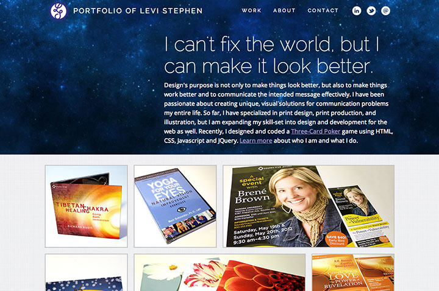

Design and development of website iteratively throughout MCAD IDM program.
The first version of my personal portfolio site was built during my first semester of the IDM program while taking the Web Development 1: HTML & CSS and Web Design 1 courses.
The second version was developed the summer after the completion of those courses and was the first version to be placed on a live host.
I originally wanted the descriptions of the projects to be overlays and appear on hover, but I did not have the technical knowledge necessary to find how to make that work.
I did not spend a lot of time developing the design through all the steps of process, because I intended it to be practice for HTML/CSS skills. I was also exploring the capabilities of WordPress for an assignment in Web Dev 1, but transferring this site completely to WordPress was beyond the scope of the project, so it was not completed.
This version improved on the display of the projects with the initial use of the masonry style layout. I explored the use of the Javascript library Packery for the layout, but could not get it to work properly with my limited knowledge of Javascript at this point.
Instead I placed the images in the layout manually and used a slideshow in order to focus on them at a closer level.
